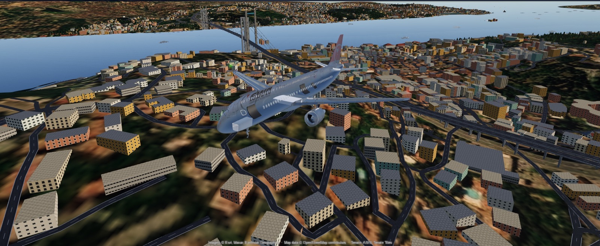
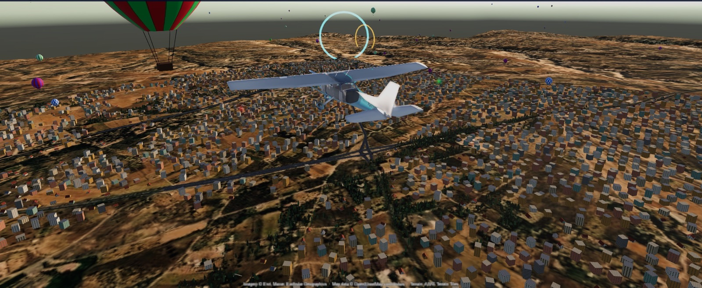
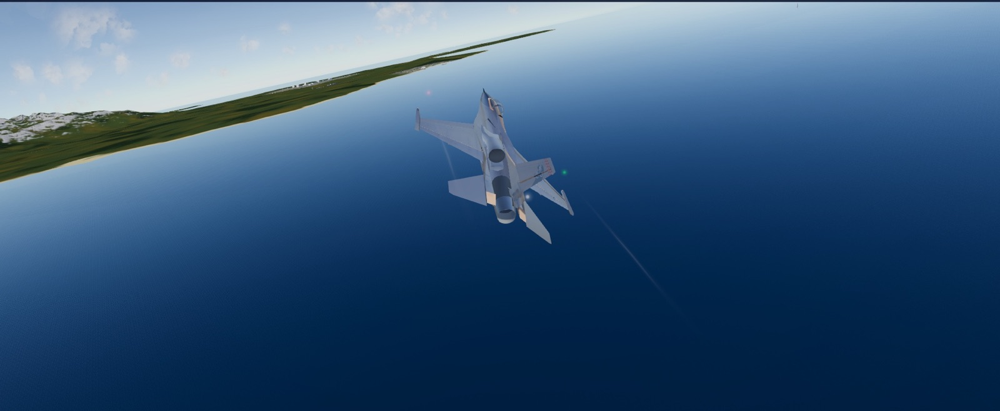
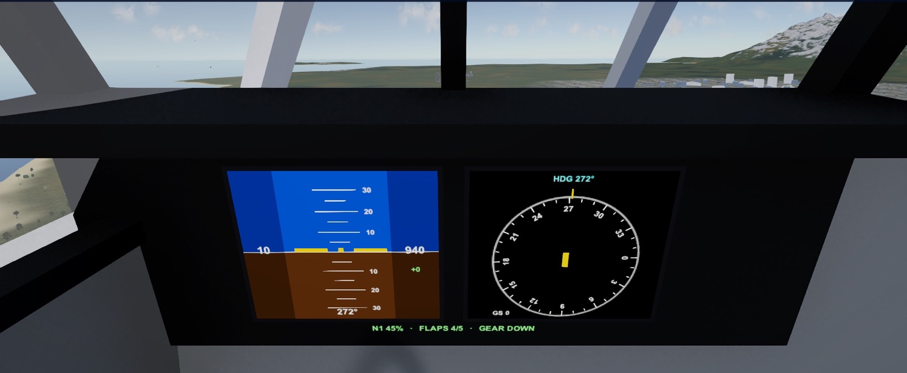
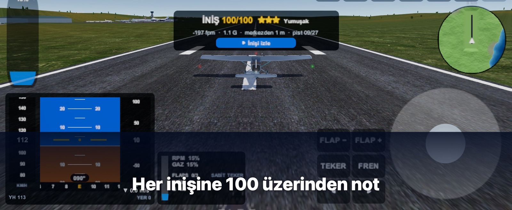
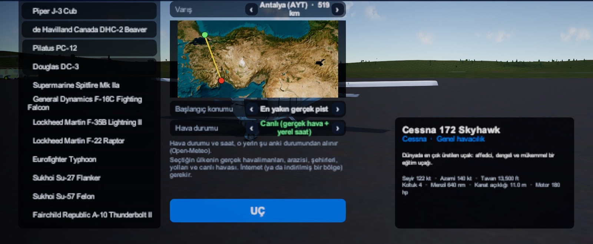

🌍
Gerçek dünyaThe real world
Haritadan istediğin yeri seç ya da bulunduğun yerden kalk. Bir bölgeyi indirip internetsiz de uçabilirsin.Pick any place on the map, or take off from where you are. Download a region and fly offline too.

Gökyüzü senin. Dünya seni bekliyor.The sky is yours. The world is waiting.
Gerçek uydu görüntüsü ve gerçek arazi üzerinde uç. İstanbul Boğazı'ndan Kapadokya'ya, evinin üstünden dünyanın öbür ucuna.Fly over real satellite imagery and real terrain. From the Bosphorus to Cappadocia, from your own street to the other side of the world.
Haritadan istediğin yeri seç ya da bulunduğun yerden kalk. Bir bölgeyi indirip internetsiz de uçabilirsin.Pick any place on the map, or take off from where you are. Download a region and fly offline too.
Cessna'dan 747'ye, Spitfire'dan F-22'ye, Robinson'dan Chinook'a; her biri kendi uçuş hissiyle.From a Cessna to a 747, a Spitfire to an F-22, a Robinson to a Chinook, each with its own feel.
İşaretli pistler, kalkış ve varış seçimi, otopilot, sesli ATC. Her inişe 100 üzerinden puan ve tekrar izleme.Marked runways, departure and arrival, autopilot, voice ATC. Every landing gets a score out of 100 and a replay.
Öğrenci pilottan kaptana kariyer, kredi kazandıran işler, günün uçuşu, haftalık etkinlikler ve 29 başarım.A career from student pilot to captain, paid jobs, a daily flight, weekly events and 29 achievements.
Canlı hava, gün doğumu ve batımı, fırtına, kar; mevsime göre değişen ağaçlar.Live weather, sunrise and sunset, storms, snow, and trees that change with the season.
Zamanı durdur, kamerayı serbest bırak, filtre seç; en güzel anını kaydet.Freeze time, free the camera, pick a filter and save your best moment.





Bir sorun mu var, bir fikrin mi? Bize buradan yaz, en kısa sürede dönelim.
Something wrong, or an idea? Write to us here and we'll get back to you.
Gerçek dünya için internet gerekir. Bağlantın yavaşsa "Tekrar dene"ye bas ya da internetsiz çalışan Elara Adaları'nda uç. Bir bölgeyi önceden indirmek için: Gerçek Dünya → yer seç → Bu bölgeyi indir.
The real world needs internet. On a slow connection press "Try again", or fly the Elara Islands, which work offline. To download a region beforehand: Real World → pick a place → Download this region.
Mağaza → Satın alımları geri yükle.
Shop → Restore purchases.
iPhone/iPad'de Ayarlar → adın → Abonelikler; Android'de Google Play → Ödemeler ve abonelikler. Üyelik, ödenen dönemin sonuna kadar sürer.
On iPhone/iPad: Settings → your name → Subscriptions; on Android: Google Play → Payments & subscriptions. It stays active until the end of the paid period.
Ayarlar → Grafik kalitesini bir kademe düşür ya da Pil tasarrufunu aç.
Settings → lower the graphics quality one step, or turn on Battery saver.